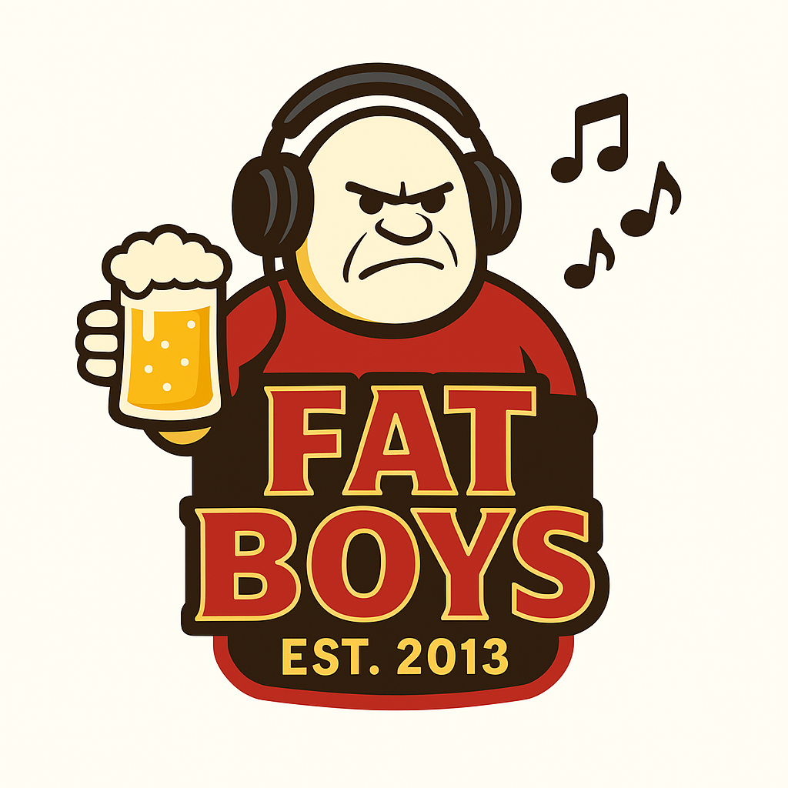

Die offizielle Fatboys Playlist
- Bis der letzte lacht
- Trinken, lachen, toben
- Bis der Hahn kräht
- Wir heben die Gläser hoch!
- Der Krug wird umgestülplt
- Ein Prost auf die Freunde
- Hoch die Gläser!
- Sauf! Sauf! Sauf!
- Der Abend macht Spass
- 1 Hoch, 2 Leer
- Zwei Null Eins Drei
- Gläser voller Bier
- Schlachtruf ohne Gnad
- Niemals Stop
- Die Fatboys rufen laut
- Wenn der Krug gut ruht
- Am Tresen
- Fatboys feiern bis alles zerbrach
- Keiner lang allein
- Fatboys bleiben toll
- Kings im Land der Bier
- Das Bier ist unser Ziel
- Fatboys stehen fest wie Wände
- Ein Schluck fürs Glück
- Wir sind die Fatboys
- Fatboys Style
- Mitreißend männliche Stimme